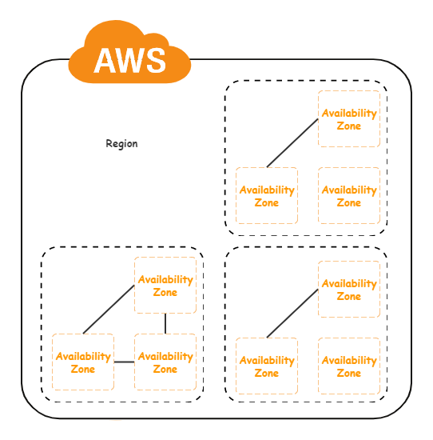

云计算概览
1. 云计算定义
云计算（CloudComputing）在维基百科的定义是：一种基于互联网的计算方式，通过这种方式，共享的软硬件资源和信息可以按需求提供给计算机终端和其他设备。
—— 维基百科
云计算是一种按使用量付费的模式，这种模式提供可用的、便捷的、按需的网络服务（即随时随地接入可接入），进入可配置的计算资源共享池（包括：网络、服务器、存储、应用软件、服务），这些资源能够被快速提供，只需投入很少的管理工作，或与服务供应商进行很少的交互。
—— 美国国家标准与技术研究院
2. 云计算的发展

3. 云计算的分类
云计算的分类有多种，按照服务类型分为IaaS、PaaS和SaaS。
- IaaS
IaaS（Infrastructure as a Service），基础设施即服务，就是将基础设施当作服务对外输出，那么什么是基础设施呢？计算、存储、网络这些原始资源就是基础设施资源，通过互联网对外提供服务。典型的例子是Amazon的EC2服务。虚拟化是IaaS实现的基础，通过计算虚拟化、网络虚拟化和存储虚拟化将物理资源整合成虚拟的资源池，然后将资源以更小的粒度提供给资源申请者，从而完成资源的二次分配。 - PaaS
PaaS（Platform as a Service），平台即服务，它直接为用户提供一套平台，包括语言运行环境、编程框架及数据存储中间件等一系列功能。这个平台可以是Java开发平台，用户只需要在遵守平台开发规范的前提下，编写自己的业务代码，单击运行，平台就会自动完成代码编译和打包，以及程序所需的数据存储（例如MySQL），即通过调用SDK或者API就可以使用平台，使得用户可以更加关注自己的业务代码的编写。容器和Kubernetes技术的不断成熟，PaaS将管理的对象从资源升级到服务，面向接口编程和运维，PaaS平台的本质就是自动化编译构建及自动化服务运维。 - SaaS
SaaS（Software as a Service），软件即服务，它是最高层的抽象，对于最终用户，它不关心任何技术相关内容，以服务的方式交付。我们使用的在线云编辑器就是一种SaaS服务，只需要通过浏览器就可以在线编辑Word或者PPT，并且可以云端保存，而且只要在能够连接到互联网的情况下，都可以编辑，用户不需要关心背后的实现细节。

从IaaS到SaaS，用户对底层技术的依赖越来越低，使用的方式越来越便捷，相应对底层技术的要求也越来越高。
伴随着时代的发展，也出现了一些新的服务类型，例如FaaS（Function as a Service），腾讯云提供的云函数。
将容器当作一种服务类型的CaaS（Container as a Service），通过容器化使开发人员和运维人员可以在这里共同构建、迁移和运行应用程序。
还有BaaS（区块链即服务）、TaaS（TensorFlow即服务）等，这些都是SaaS的应用。
按照服务范围分为私有云、公有云和混合云。
- 私有云
私有云，顾名思义，就是企业内部私有化部署的，为企业内部提供云服务。私有云的主要目的是充分利用自有物理服务器资源，更加安全便捷地获取云服务，尤其在金融行业，为了数据的保密和安全，通常会采用私有化部署。私有云的特点是一般规模比较小、单集群或者同城多集群部署、几千级别的服务器数量、对内部隔离和安全要求比较低，当然一个企业内部不同部门的资源隔离也是必须的。为了适应不同企业的组织规划和流程，通常还会根据企业需求，定制一些特有的功能，这也是当前很多CMP运管平台专攻的市场。私有云的定制化让私有云更加贴近客户的需求、接近数据源的部署方式，更加高效、便捷。 - 公有云
公有云是当前最为大众熟知的云服务提供方式，向全球用户提供云服务，当前最大几个公有云厂商包括AWS、微软、Google和阿里云。公有云的特点是集群规模很大，百万级别的服务器，全球多区域部署的数据中心。它们在系统安全、防攻击，以及可靠性等方面会有更高的要求。 - 混合云
混合云是将上面两种场景结合的产物，既然企业已经有了私有云，为什么还需要公有云服务呢？一方面是对数据安全的保护，不能将所有服务都迁移至公有云部署；另一方面，面对突发流量的情况，可以利用公有云快速伸缩的特性，分担业务流量，最典型的就是中国铁路12306通过阿里云分担车票查询服务的请求。为了管理混合云，企业内部通常会定制一套混合云管理系统，同时对接私有云和公有云的API，但混合云实施的难点是解决服务之间的调用、网络互连和资源调度等问题。
云计算还可以根据行业划分为政务云（面向政府行业）、金融云（面向金融行业）、教育云（面向教育行业）等，根据每个行业的不同行业特征，提供定制的云服务。
4. 云计算架构
4.1 部署架构
- 私有云
中小企业的私有云部署通常采用几百台服务器，通过vlan方式实现网络隔离，较为简单、高效。中型企业的私有云部署，需要考虑多机房网络互连和备份，通过专线互连，跨机房网络VXLAN是一个很好的解决方案。

- 公有云
在公有云中，资源管理按照层级划分，首先是区域（Region），每个区域都是独立的地理位置，并且完全隔离，可以实现一定程度的容错能力和稳定性，而且EC2实例支持跨区域的部署。

4.2 架构设计

5. 云计算中的关键技术
5.1 异构资源管理
异构资源，就是数据中心里面有多种虚拟化软件存在的场景，当然对于最终使用虚拟机的用户来说，是不需要感知的。当有不同的虚拟化软件存在的时候，IaaS平台需要去适配各种虚拟化接口。如果有一部分虚拟机是VMware，还有一部分是KVM，当需要管理这两种虚拟化软件的时候，需要通过相应的接口去适配。通常，针对KVM需要通过Libvirt接口，而针对VMware是通过VCenter的API的。将不同的接口通过适配器模式抽象成统一的接口。在资源管理的时候，需要先确定资源所属的虚拟化类型，然后调用不同的虚拟化API完成资源管理。例如，针对一次虚拟机的开机操作，需要先通过数据库查询该虚拟机所在资源池、所使用的虚拟化软件，然后调用对应的虚拟化软件API，如果是KVM，则去调用Libvirt的接口启动Domain。如果是虚拟机和容器的混合，就需要去适配容器的管理API。
5.2 虚拟化
虚拟化是云的基石，包括计算虚拟化、分布式存储虚拟化、SDN网络虚拟化等。在云的环境中软件定义一切，通过软件实现了资源隔离、安全访问、数据高可用性和网络的自定义。
虚拟化需要解决资源的竞争与隔离，多个用户的进程运行在同一台服务器上面，一方面需要保障每个进程具有相同的优先级，避免由于单个进程消耗过多资源而影响其他进程的运行，另一方面需要完善隔离机制，避免单个程序的安全漏洞影响其他用户程序。
虚拟化需要提供与传统资源相兼容的接口，很多情况下，终端用户是不需要感知虚拟化存在的。在为用户分配一台服务器的时候，用户不用关心它到底是一台物理机，还是一台虚拟机。分配一个块存储或者NFS的时候，用户也不需要了解数据是如何保存的。
通过软件虚拟化虽然可以实现很多硬件的功能，通过软件虚拟化虽然可以实现很多硬件的功能，虚拟化并不能完全达到硬件性能，并且很多虚拟化方案本身还消耗一定的资源。
5.3 资源调度
资源调度就是当用户申请资源的时候，系统需要通过调度确定资源位置（针对虚拟机调度场景决定虚拟机开在哪台物理机器上）。资源调度的优劣不仅会影响资源利用率的高低，还会影响整个系统的稳定性。
Google在一篇关于Omega的调度系统论文中将调度分为三类：单体、二层调度和共享状态。
- 单体
单体是指所有任务都是通过一个串行调度器分配的，典型的是GoogleBorg和它的开源实现Kubernetes，它的优点是简单，但缺点也比较明显，很难支持多类型任务的执行，如同时支持批处理和长任务。 - 二层调度
二层调度是将资源分配和任务调度分离，第一层是从全局的资源池中分配资源给各种类型任务调度器，第二层任务调度器依据任务特点启动任务，典型的代表是Mesos和Yarn，其中，Mesos的Framework或者Yarn的AppMaster就是任务调度器。二层调度器的缺点是：资源调度器无法感知全局资源，只了解自己的可用资源，并且每个任务调度器只会最大化自己的利益，造成全局资源的使用失衡。 - 共享状态
共享状态通过在每个任务调度器中保存一份整个集群状态信息的副本，从而实现全局调度，典型的代表是Omega。但共享状态调度的方式实现起来比较复杂，除了解决数据共享，还需要解决调度冲突等问题。

通常的调度流程分为两层，第一层是主机过滤（Filter），第二层是主机的权值打分（Weight）。
过Filter和Weight决定这次创建资源（虚拟机或者容器）应该分配到哪一台服务器上。在Filter过程中，主要是主机筛选，通常是对容量如剩余CPU、内存、主机端口、主机IP地址、主机名或者主机位置等条件筛选。在Weight阶段，主要通过一些调度算法，如：平均资源使用算法、最大主机资源利用率算法、亲和与反亲和算法等给每个Filter后的主机进行评分，最后按照分数排序确定最优主机。当服务器达到一定规模后，Filter和Weight过程将会耗费很多时间，优化的方式通常包括：分区调度（将主机划分成多个集群，每次调度只针对集群）、并行调度（将调度算法并行化处理，提高执行效率，并采用乐观锁和重试机制）。
在资源混部的架构下，资源调度更加复杂：虚拟机与容器混部、流或批处理任务与常驻进程混部、多任务优先级QoS等。任务优先级调度需要保障高优先级任务拥有更高的资源分配权。通常批处理任务的优先级比较低，而Web服务的优先级较高，当资源不足时可以优先回收批处理，保障Web服务的稳定运行。
5.4 自定义网络
在云环境中，每个用户都有多套VPC（Virtual Private Cloud）。这是用户自定义的网络环境，可以配置网络的IP地址范围、创建子网，以及配置路由表、网关和ACL安全设置等操作。
网络虚拟化，或者说SDN技术可以帮助我们解决相关问题。虚拟的网络交换机提供数据帧的二层转发，相比于传统的物理交换机，可以更加灵活地配置，例如可以通过流表随意修改源mac和目的mac、添加和去除vlan等；虚拟的路由器共有三层转发功能，结合iptables技术提供NAT功能，通过namespace技术可以为每个用户提供一个虚拟路由器；还有安全组的设置，可以自定义各种安全规则，将虚拟机加入安全组，从而应用特定的安全策略等。
5.5 安全与高可用
安全是指数据的访问安全和不丢失，高可用是指数据可以随时被访问。用户将数据和业务迁移到云上是存在一定风险的。特别在公有云环境中，保障数据安全保密及可用非常重要。在面对系统漏洞或者网络DDoS攻击时，如何做到将风险降到最低等问题都是云计算面临的关键技术。数据安全常用的隔离技术包括计算虚拟化隔离（如KVM），网络虚拟化（如VXLAN），存储虚拟化（如LUN），还包括用户权限认证和授权管理等。数据的高可用可以通过多副本实现，甚至是跨数据中心的多副本备份，服务的高可用可以借助高可用的弹性负载均衡或者纠错码分发流量，自动摘除后端故障节点来实现。
6. 云计算的优势
- 资源使用率的提高
- 提高系统安全
- 可以降低初期的投入
- 保证了服务的可靠性
- 可以缩短业务上线的周期
7. 云计算面临的风险和挑战
主要风险是漏洞扩散，云的使用方式是将服务整合到一起，从而充分利用资源，然而鸡蛋放到一个篮子的做法，很容易引起安全漏洞的扩散，如果一个云的恶意用户通过虚拟化存在的漏洞，从而获得主机的操作权限，进一步获取整个数据中心的操作权限，那么造成的影响将远远超过传统的黑客攻击。
面临的挑战主要包括：
①定制需求，无论是公有云，还是私有云，面对的客户群体的需求差异性很大，需要很多定制任务，而且很多定制并不能作为通用特性附加到产品，这些定制耗费很多人力物力；
②云服务受网络的影响很大，一方面是云的接入通过互联网，这种接入方式很难保证用户的体验，毕竟需要经过运营商的中间网络，另一方面是云数据中心之间的互连，如果是同城通过专线，传输的连续性基本可以得到保证，但如果是异地，即便是通过专线也很难保障传输的连续性；
③政策影响，如果将数据放到云上面，很多企业可能比较担忧数据的安全，即便企业能够放开，很多政府的条例也不允许，例如AWS进入中国，阿里云进入美国，都会面临很多政策风险。8. AWS（Amazon Web Service）
- IAM（Identity and Access Management）
IAM是AWS（Amazon Web Services）的权限管理服务，负责AWS的认证和授权。可以通过IAM创建和管理AWS的用户和用户组，并设置各种权限来允许或拒绝用户对AWS资源的访问，从而保证资源的隔离和安全。 - EC2（Amazon Elastic Compute Cloud）
在AWS（Amazon Web Services）云中提供可扩展的计算服务。通俗来说，即提供虚拟机服务。 - 虚拟机安全服务安全组（Security Group）
虚拟机安全服务安全组（Security Group） 起着虚拟防火墙的作用，可以控制一个或多个实例的流量。在启动EC2实例时，将一个或多个安全组与该实例关联，并且为每个安全组添加规则，规定上行（流出）和下行（流入）的流量规则。 - AMI（Amazon Machine Images）
AMI（Amazon Machine Images）是Amazon系统镜像服务，提供启动虚拟机所需的启动模块。 - EBS（Amazon Elastic Block Store）
EBS（Amazon Elastic Block Store）为EC2实例提供块存储服务，它是高可用的块存储，并且可以加载到同一个AZ的任何一个实例中，即使虚拟机销毁，这些EBS的数据仍然会被保持，特别适高I/O类型的需求，例如文件系统或数据库存储。 - VPC (Virtual Private Cloud）
Amazon VPC（Amazon Virtual Private Cloud）是在AWS上创建隔离的私有虚拟网络。可以在VPC中启动实例。一个VPC与传统数据中心的一个网络相似，提供了动态变更和扩展的能力。在VPC中可以设定IP地址段，创建子网，并配置路由表、网关和安全设置。绑定浮动IP能够为VPC的实例提供公网服务，甚至可以将VPC连接到自己企业的数据中心，并利用AWS云扩展数据中心。弹性IP地址是专为动态云计算设计的静态IPv4地址，弹性IP地址可以快速地将地址重新映射到用户账户中的另一个实例中，从而屏蔽实例故障。 - S3（Simple Storage Service）
是AWS的对象存储服务，保证99.999999999%的存储可靠性。S3使用HTTP的方式提供服务，计价方式通过存储用量和HTTP请求次数综合定价。S3存储分为两级：bucket（对象桶）和object（对象）。
参考：
- 云计算那些事儿：从IaaS到PaaS进阶 陈晓宇（著）
- 虚拟化与云计算有什么区别？